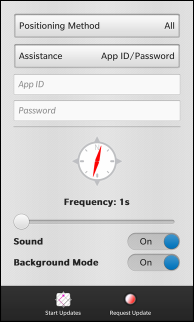
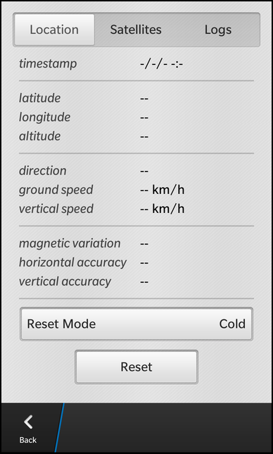

Files:
The Location Diagnostics example allows the user to configure a geo position source and retrieve information from it, either one-time or continuously.


In this example we'll learn how to use the QGeoPositionInfoSource and QGeoSatelliteInfoSource classes from the BB framework to retrieve information about the current location.
The business logic is implemented in the two C++ classes LocationDiagnostics and LocationSession. LocationDiagnostics is exported to QML under the name '_locationDiagnostics'.
The UI of this sample application consists of two pages. On the main page the user can configure various properties of the geo position source like the method to retrieve the information, credentials to request additional information from external services and the update frequency. The action bar contains two actions to start the retrieval of information and to open the second page, which displays the retrieved location information.
The configuration input fields (e.g. the DropDown for the assistance mode) get their current data from the associated property of the LocationDiagnostics object and update this property whenever the user changes the value in the field.
DropDown { id: assistanceModeSelector title: qsTr ("Assistance") Option { text: qsTr ("None") description: qsTr ("No carrier assistance") value: "none" selected: (_locationDiagnostics.assistanceMode == value) } Option { text: qsTr ("PDE") description: qsTr ("PDE Server") value: "pde" selected: (_locationDiagnostics.assistanceMode == value) } Option { text: qsTr ("SLP") description: qsTr ("SLP Server") value: "slp" selected: (_locationDiagnostics.assistanceMode == value) } Option { text: qsTr ("App ID/Password") description: qsTr ("Assistance requiring ID/Password") value: "password" selected: (_locationDiagnostics.assistanceMode == value) } onSelectedValueChanged: { _locationDiagnostics.assistanceMode = selectedValue } }
The visibility of some of the input fields depends on the current value of other input fields.
TextField { hintText: qsTr ("PDE URL") visible: (assistanceModeSelector.selectedValue == "pde") inputMode: TextFieldInputMode.Url onTextChanging: _locationDiagnostics.pdeUrl = text }
Whenever the user triggers the 'Start Updates' or 'Request Update' actions, a new LocationSession object is created by invoking the createLocationSession() method on the LocationDiagnostics object.
actions: [ ActionItem { title: qsTr ("Start Updates") imageSource: "asset:///images/track.png" ActionBar.placement: ActionBarPlacement.OnBar onTriggered: { var session = _locationDiagnostics.createLocationSession(true) var page = locationPage.createObject() page.session = session navigationPane.push(page) } }, ActionItem { title: qsTr ("Request Update") imageSource: "asset:///images/pin.png" ActionBar.placement: ActionBarPlacement.OnBar onTriggered: { var session = _locationDiagnostics.createLocationSession(false) var page = locationPage.createObject() page.session = session; navigationPane.push(page) } } ]
Afterwards a new LocationPage object is instantiated, the session is assigned to the page and the page is pushed on the NavigationPane
attachedObjects: [ ComponentDefinition { id: locationPage source: "LocationPage.qml" } ]
The LocationPage object is created from a ComponentDefinition which references the LocationPage.qml file.
The 'session' property is a custom property of type variant that is defined in the top element of LocationPage.qml. After the LocationSession object has been assigned to it in the action signal handlers, other controls of the LocationPage can access its functionality.
property variant session
The LocationPage consists of a SegmentedControl at the top, where the user can switch between three sub-pages and the three sub-pages below.
SegmentedControl { id: pageSelector Option { text: qsTr ("Location") selected: true } Option { text: qsTr ("Satellites") } Option { text: qsTr ("Logs") } }
The first sub-page displays the information from the geo position source. For each value a LabelLabel object is instantiated, which shows a title and a text side-by-side. The title is an hard-coded string but the text is bound against the appropriated property of the LocationSession object. At the bottom of the page, a DropDown allows the user to select a reset mode and a Button to trigger a reset on the geo position engine.
// Location page ScrollView { scrollViewProperties { scrollMode: ScrollMode.Vertical } visible: (pageSelector.selectedIndex == 0) Container { topPadding: 50 leftPadding: 50 rightPadding: 50 LabelLabel { label: qsTr ("timestamp") text: session ? session.time : "" } LabelLabel { label: qsTr ("method") text: session ? session.method : "" } Divider {} LabelLabel { label: qsTr ("latitude") text: session ? session.latitude : "" } LabelLabel { label: qsTr ("longitude") text: session ? session.longitude : "" } LabelLabel { label: qsTr ("altitude") text: session ? session.altitude : "" } Divider {} LabelLabel { label: qsTr ("direction") text: session ? session.direction : "" } LabelLabel { label: qsTr ("ground speed") text: session ? session.groundSpeed : "" } LabelLabel { label: qsTr ("vertical speed") text: session ? session.verticalSpeed : "" } Divider {} LabelLabel { label: qsTr ("magnetic variation") text: session ? session.magneticVariation : "" } LabelLabel { label: qsTr ("horizontal accuracy") text: session ? session.horizontalAccuracy : "" } LabelLabel { label: qsTr ("vertical accuracy") text: session ? session.verticalAccuracy : "" } LabelLabel { label: qsTr ("horizontal dilution") text: session ? session.horizontalDilution : "" } LabelLabel { label: qsTr ("vertical dilution") text: session ? session.verticalDilution : "" } LabelLabel { label: qsTr ("position dilution") text: session ? session.positionDilution : "" } Divider {} LabelLabel { label: qsTr ("ttff") text: session ? session.ttff : "" } LabelLabel { label: qsTr ("gps week") text: session ? session.gpsWeek : "" } LabelLabel { label: qsTr ("gps time of week") text: session ? session.gpsTimeOfWeek : "" } LabelLabel { label: qsTr ("is propagated") text: session ? session.isPropagated : "" } DropDown { id: resetModeSelector title: qsTr ("Reset Mode") Option { text: qsTr ("Cold") value: "cold" selected: true } Option { text: qsTr ("Warm") value: "warm" } Option { text: qsTr ("Hot") value: "hot" } } Button { horizontalAlignment: HorizontalAlignment.Center text: qsTr ("Reset") onClicked: session.resetSession(resetModeSelector.selectedValue) } } }
The second sub-page displays information about the available satellites (Note: This functionality will be implemented in a later version of this example).
The third sub-page displays the logging information of the LocationSession object. For this purpose a TextArea is instantiated with the LocationSession's 'log' property bound against the 'text' property.
// Logs page ScrollView { scrollViewProperties { scrollMode: ScrollMode.Vertical } visible: (pageSelector.selectedIndex == 2) Container { topPadding: 30 leftPadding: 30 rightPadding: 30 TextArea { textStyle { base: SystemDefaults.TextStyles.BodyText fontWeight: FontWeight.Normal fontFamily: "courier" } editable: false backgroundVisible: true hintText: qsTr ("Logs") text: session ? session.log : "" } } }
To allow the user to leave the LocationPage again, a custom back action is defined in the pane properties. Whenever this action is triggered, the LocationSession is stopped (and deletes itself) and the page is removed from the NavigationPane.
paneProperties: NavigationPaneProperties { backButton: ActionItem { title: qsTr ("Back") onTriggered: { session.stopUpdates() navigationPane.pop() } } }
LocationDiagnostics is the central class in this application. It encapsulates the configuration options for a geo position source and provides a method to create new LocationSession objects.
class LocationDiagnostics : public QObject { Q_OBJECT // The properties to configure the geo location sources Q_PROPERTY(QString positionMethod READ positionMethod WRITE setPositionMethod NOTIFY positionMethodChanged) Q_PROPERTY(QString assistanceMode READ assistanceMode WRITE setAssistanceMode NOTIFY assistanceModeChanged) Q_PROPERTY(QString pdeUrl READ pdeUrl WRITE setPdeUrl NOTIFY pdeUrlChanged) Q_PROPERTY(QString slpUrl READ slpUrl WRITE setSlpUrl NOTIFY slpUrlChanged) Q_PROPERTY(QString appId READ appId WRITE setAppId NOTIFY appIdChanged) Q_PROPERTY(QString password READ password WRITE setPassword NOTIFY passwordChanged) Q_PROPERTY(int frequency READ frequency WRITE setFrequency NOTIFY frequencyChanged) Q_PROPERTY(bool useSound READ useSound WRITE setUseSound NOTIFY useSoundChanged) Q_PROPERTY(bool backgroundMode READ backgroundMode WRITE setBackgroundMode NOTIFY backgroundModeChanged) public: LocationDiagnostics(QObject *parent = 0); /** * This method creates a new location session. */ Q_INVOKABLE LocationSession* createLocationSession(bool trackingMode); Q_SIGNALS: // The change notification signals of the properties void positionMethodChanged(); void assistanceModeChanged(); void pdeUrlChanged(); void slpUrlChanged(); void appIdChanged(); void passwordChanged(); void frequencyChanged(); void useSoundChanged(); void backgroundModeChanged(); private Q_SLOTS: void onManualExit(); private: // The accessor methods of the properties QString positionMethod() const; void setPositionMethod(const QString &method); QString assistanceMode() const; void setAssistanceMode(const QString &mode); QString pdeUrl() const; void setPdeUrl(const QString &url); QString slpUrl() const; void setSlpUrl(const QString &url); QString appId() const; void setAppId(const QString &appId); QString password() const; void setPassword(const QString &password); int frequency() const; void setFrequency(int frequency); bool useSound() const; void setUseSound(bool sound); bool backgroundMode() const; void setBackgroundMode(bool mode); // The property values QString m_positionMethod; QString m_assistanceMode; QString m_pdeUrl; QString m_slpUrl; QString m_appId; QString m_password; int m_frequency; bool m_useSound; bool m_backgroundMode; };
In the constructor the configuration options are initialized with the values from the persistent storage
LocationDiagnostics::LocationDiagnostics(QObject *parent) : QObject(parent) { // Load default values from persistent storage QSettings settings; m_positionMethod = settings.value("positionMethod", "all").toString(); m_assistanceMode = settings.value("assistanceMode", "password").toString(); m_frequency = settings.value("frequency", "1").toInt(); m_useSound = settings.value("useSound", true).toBool(); m_backgroundMode = settings.value("backgroundMode", true).toBool(); connect(qApp, SIGNAL(manualExit()), SLOT(onManualExit())); }
The configuration options are made available to the UI as properties and inside the setter method new values are saved back to the persistent storage immediately.
QString LocationDiagnostics::positionMethod() const { return m_positionMethod; } void LocationDiagnostics::setPositionMethod(const QString &method) { if (m_positionMethod == method) return; m_positionMethod = method; QSettings settings; settings.setValue("positionMethod", m_positionMethod); emit positionMethodChanged(); }
Whenever the user triggers the 'Start Updates' or 'Request Update' actions in the UI, createLocationSession() is invoked. Inside this method a new LocationSession object is created and afterwards configured according to the current configuration options. At the end the session is activated and returned to the caller.
LocationSession* LocationDiagnostics::createLocationSession(bool trackingMode) { // Create a new location session LocationSession* session = new LocationSession(this, true); // Configure the session according to the property values session->setSoundEnabled(m_useSound); if (!session->positionSource()) return session; if (m_positionMethod == QLatin1String("all")) { session->positionSource()->setPreferredPositioningMethods(QGeoPositionInfoSource::AllPositioningMethods); } else if (m_positionMethod == QLatin1String("nonSatellite")) { session->positionSource()->setPreferredPositioningMethods(QGeoPositionInfoSource::NonSatellitePositioningMethods); } else if (m_positionMethod == QLatin1String("satellite")) { session->positionSource()->setPreferredPositioningMethods(QGeoPositionInfoSource::SatellitePositioningMethods); } else if (m_positionMethod == QLatin1String("gps")) { session->positionSource()->setProperty("provider", "gnss"); session->positionSource()->setProperty("fixType", "gps_autonomous"); } else if (m_positionMethod == QLatin1String("cellular")) { session->positionSource()->setProperty("provider", "network"); session->positionSource()->setProperty("fixType", "cellsite"); } else if (m_positionMethod == QLatin1String("wifi")) { session->positionSource()->setProperty("provider", "network"); session->positionSource()->setProperty("fixType", "wifi"); } else if (m_positionMethod == QLatin1String("msb")) { session->positionSource()->setProperty("provider", "gnss"); session->positionSource()->setProperty("fixType", "gps_ms_based"); } else if (m_positionMethod == QLatin1String("msa")) { session->positionSource()->setProperty("provider", "gnss"); session->positionSource()->setProperty("fixType", "gps_ms_assisted"); } if (m_assistanceMode == QLatin1String("pde")) { if (!m_pdeUrl.isEmpty()) session->positionSource()->setProperty("qtaPDEURL", m_pdeUrl); } else if (m_assistanceMode == QLatin1String("slp")) { if (!m_slpUrl.isEmpty()) session->positionSource()->setProperty("slpURL", m_slpUrl); } else if (m_assistanceMode == QLatin1String("password")) { if (!m_appId.isEmpty()) session->positionSource()->setProperty("qtaAppID", m_appId); if (!m_password.isEmpty()) session->positionSource()->setProperty("qtaAppPassword", m_password); } session->positionSource()->setUpdateInterval(m_frequency * 1000); session->positionSource()->setProperty("canRunInBackground", m_backgroundMode); // Activate the session if (trackingMode) { session->startUpdates(); } else { session->requestUpdate(); } return session; }
The LocationSession encapsulates the retrieval of geo position information. For this purpose it contains two member variables of type QGeoPositionInfoSource and QGeoSatelliteInfoSource, which are the interface to the BB10 geo position information service. The retrieved values are accessible through the properties of the LocationSession class.
class LocationSession: public QObject { Q_OBJECT // The properties that provide the location information to the UI Q_PROPERTY(QString method READ method NOTIFY dataChanged) Q_PROPERTY(QString latitude READ latitude NOTIFY dataChanged) Q_PROPERTY(QString longitude READ longitude NOTIFY dataChanged) Q_PROPERTY(QString altitude READ altitude NOTIFY dataChanged) Q_PROPERTY(QString time READ time NOTIFY dataChanged) Q_PROPERTY(QString direction READ direction NOTIFY dataChanged) Q_PROPERTY(QString groundSpeed READ groundSpeed NOTIFY dataChanged) Q_PROPERTY(QString verticalSpeed READ verticalSpeed NOTIFY dataChanged) Q_PROPERTY(QString horizontalAccuracy READ horizontalAccuracy NOTIFY dataChanged) Q_PROPERTY(QString verticalAccuracy READ verticalAccuracy NOTIFY dataChanged) Q_PROPERTY(QString magneticVariation READ magneticVariation NOTIFY dataChanged) Q_PROPERTY(QString horizontalDilution READ horizontalDilution NOTIFY dataChanged) Q_PROPERTY(QString verticalDilution READ verticalDilution NOTIFY dataChanged) Q_PROPERTY(QString positionDilution READ positionDilution NOTIFY dataChanged) Q_PROPERTY(QString ttff READ ttff NOTIFY dataChanged) Q_PROPERTY(QString gpsWeek READ gpsWeek NOTIFY dataChanged) Q_PROPERTY(QString gpsTimeOfWeek READ gpsTimeOfWeek NOTIFY dataChanged) Q_PROPERTY(bool isPropagated READ isPropagated NOTIFY dataChanged) Q_PROPERTY(QString satellitesInUse READ satellitesInUse NOTIFY dataChanged) Q_PROPERTY(QString satellitesInView READ satellitesInView NOTIFY dataChanged) Q_PROPERTY(QString log READ log NOTIFY logChanged) public: LocationSession(QObject* parent, bool satInfo); // This method is called to trigger the continious retrieval of location information void startUpdates(); // This method is called to trigger an one-time retrieval of location information void requestUpdate(); // The accessor method for the internal geo position object QGeoPositionInfoSource* positionSource() const; // Sets whether a sound should be played on retrieval of new location information void setSoundEnabled(bool enabled); // This method is called to stop the retrieval of location information Q_INVOKABLE void stopUpdates(); // This method is called to reset the internal retrieval engine Q_INVOKABLE void resetSession(const QString &type); Q_SIGNALS: // The change notification signals of the properties void dataChanged(); void logChanged(); private Q_SLOTS: // This slot is invoked whenever new location information are retrieved void positionUpdated(const QGeoPositionInfo & pos); // This slot is invoked whenever a timeout happend while retrieving location information void positionUpdateTimeout(); // This slot is invoked whenever new information about the used satellites are retrieved void satellitesInUseUpdated(const QList<QGeoSatelliteInfo> & satellites); // This slot is invoked whenever new information about the in-view satellites are retrieved void satellitesInViewUpdated(const QList<QGeoSatelliteInfo> & satellites); private: // A helper method to parse the raw geo information void parseRawData(); // A helper message to log events void log(const QString &msg, bool showInUi = true); // The accessor methods of the properties QString method() const; QString latitude() const; QString longitude() const; QString altitude() const; QString time() const; QString direction() const; QString groundSpeed() const; QString verticalSpeed() const; QString horizontalAccuracy() const; QString verticalAccuracy() const; QString magneticVariation() const; QString horizontalDilution() const; QString verticalDilution() const; QString positionDilution() const; QString ttff() const; QString gpsWeek() const; QString gpsTimeOfWeek() const; bool isPropagated() const; QString satellitesInUse() const; QString satellitesInView() const; QString log() const; // The flag for sound usage bool m_soundEnabled; // The central object to retrieve location information QGeoPositionInfoSource *m_positionSource; // The central object to retrieve satellite information QGeoSatelliteInfoSource *m_satelliteSource; // The property values QString m_method; QString m_latitude; QString m_longitude; QString m_altitude; QString m_time; QString m_direction; QString m_groundSpeed; QString m_verticalSpeed; QString m_horizontalAccuracy; QString m_verticalAccuracy; QString m_magneticVariation; QString m_horizontalDilution; QString m_verticalDilution; QString m_positionDilution; QString m_ttff; QString m_gpsWeek; QString m_gpsTimeOfWeek; bool m_isPropagated; QString m_satellitesInUse; QString m_satellitesInView; QString m_log; };
Inside the constructor the QGeoPositionInfoSource and QGeoSatelliteInfoSource objects are initialized and their update signals are connected against custom slots to be informed about new data. The other property values are initialized with default values.
LocationSession::LocationSession(QObject* parent, bool satInfo) : QObject(parent) , m_soundEnabled(false) , m_positionSource(QGeoPositionInfoSource::createDefaultSource(this)) , m_isPropagated(false) { if (m_positionSource) { connect(m_positionSource, SIGNAL(positionUpdated(const QGeoPositionInfo &)), this, SLOT(positionUpdated(const QGeoPositionInfo &))); connect(m_positionSource, SIGNAL(updateTimeout()), this, SLOT(positionUpdateTimeout())); log(tr("Initialized QGeoPositionInfoSource")); } else { log(tr("Failed to initialized QGeoPositionInfoSource")); } if (satInfo) { m_satelliteSource = QGeoSatelliteInfoSource::createDefaultSource(this); if (m_satelliteSource) { connect(m_satelliteSource, SIGNAL(satellitesInUseUpdated(const QList<QGeoSatelliteInfo> &)), this, SLOT(satellitesInUseUpdated(const QList<QGeoSatelliteInfo> &))); connect(m_satelliteSource, SIGNAL(satellitesInViewUpdated(const QList<QGeoSatelliteInfo> &)), this, SLOT(satellitesInViewUpdated(const QList<QGeoSatelliteInfo> &))); log(tr("Initialized QGeoSatelliteInfoSource")); } else { log(tr("Failed to initialized QGeoSatelliteInfoSource")); } } m_latitude = m_longitude = m_altitude = m_direction = m_horizontalAccuracy = m_verticalAccuracy = m_magneticVariation = tr("--"); m_time = tr("-/-/- -:-"); m_groundSpeed = tr("-- km/h"); m_verticalSpeed = tr("-- km/h"); m_satellitesInUse = m_satellitesInView = tr("No satellite information available"); }
If the user triggered the 'Start Updates' action in the UI, a new LocationSession is created and startUpdates() is invoked on it. This method will call startUpdates() on the QGeoPositionInfoSource object to retrieve updates about the current position in regular intervals.
void LocationSession::startUpdates() { if (m_positionSource) { m_positionSource->startUpdates(); log(tr("Position updates started")); } if (m_satelliteSource) { m_satelliteSource->startUpdates(); log(tr("Satellite updates started")); } }
If the user triggered the 'Request Update' action in the UI, a new LocationSession is created and requestUpdate() is invoked on it. This method will call requestUpdate() on the QGeoPositionInfoSource object to retrieve updates about the current position once.
void LocationSession::requestUpdate() { if (m_positionSource) { m_positionSource->requestUpdate(120000); log(tr("Update requested")); } }
When the user closes the LocationPage, the stopUpdates() method is invoked, which will stop the data retrieval in the QGeoPositionInfoSource and trigger a delayed delete of the LocationSession.
void LocationSession::stopUpdates() { if (m_positionSource) { m_positionSource->stopUpdates(); log(tr("Position updates stopped")); } if (m_satelliteSource) { m_satelliteSource->stopUpdates(); log(tr("Satellite updates stopped")); } deleteLater(); }
If the user clicks on the 'Reset' button in the UI, the resetSession() method is invoked with the reset type as parameter. In this case the retrieval of the data is stopped and the 'reset' property of the QGeoPositionInfoSource is set. This will result in an reset of the internal engine on next startUpdates() call.
void LocationSession::resetSession(const QString &type) { if (m_soundEnabled) SystemSound::play(SystemSound::GeneralNotification); if (m_positionSource) { m_positionSource->stopUpdates(); m_positionSource->setProperty("reset", type); m_positionSource->startUpdates(); log(tr("%1 RESET").arg(type)); } }
Whenever the QGeoPositionInfoSource reports new data, the positionUpdated() slot is invoked. Inside this slot the geo position information are copied from the QGeoPositionInfo object into the property values and the change notification signal is emitted to trigger an update in the UI.
void LocationSession::positionUpdated(const QGeoPositionInfo& pos) { if (m_soundEnabled) SystemSound::play(SystemSound::GeneralNotification); m_latitude = QString::number(pos.coordinate().latitude()); m_longitude = QString::number(pos.coordinate().longitude()); m_altitude = QString::number(pos.coordinate().altitude()); m_time = pos.timestamp().toString(); m_direction = QString::number(pos.attribute(QGeoPositionInfo::Direction)); m_groundSpeed = QString::number(pos.attribute(QGeoPositionInfo::GroundSpeed)); m_verticalSpeed = QString::number(pos.attribute(QGeoPositionInfo::VerticalSpeed)); m_horizontalAccuracy = QString::number(pos.attribute(QGeoPositionInfo::HorizontalAccuracy)); m_verticalAccuracy = QString::number(pos.attribute(QGeoPositionInfo::VerticalAccuracy)); m_magneticVariation = QString::number(pos.attribute(QGeoPositionInfo::MagneticVariation)); parseRawData(); emit dataChanged(); log(tr("update")); }